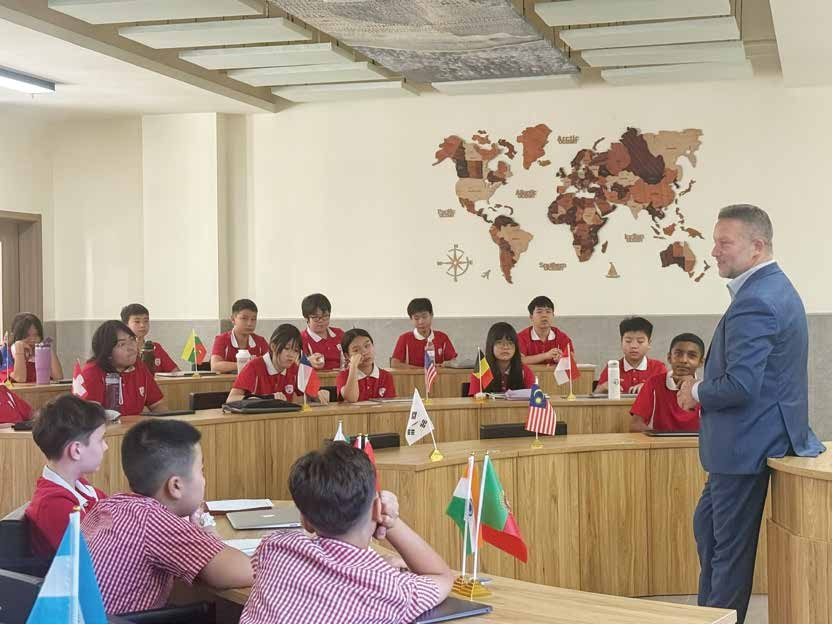
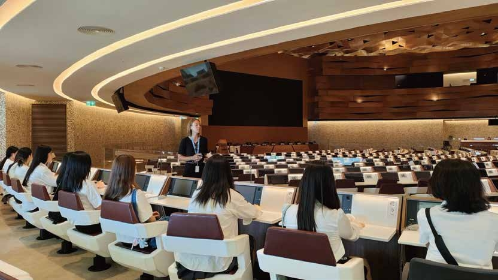
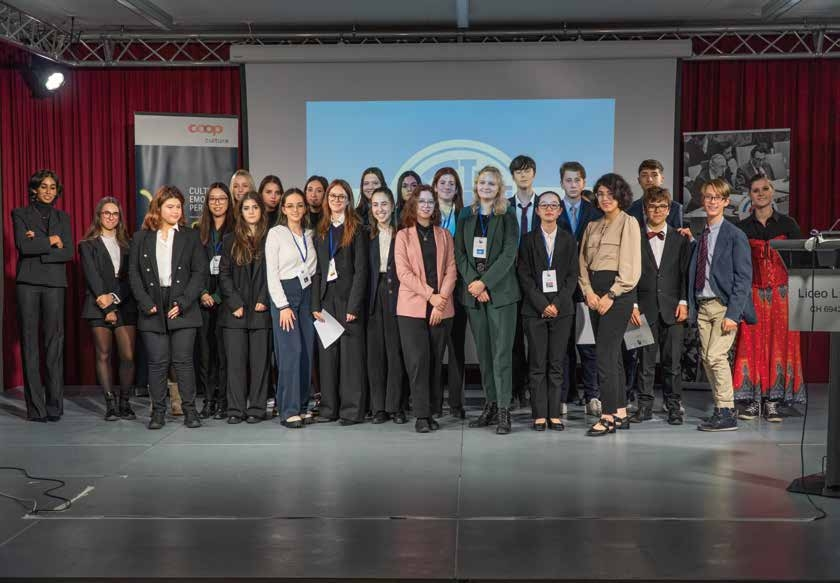
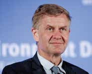
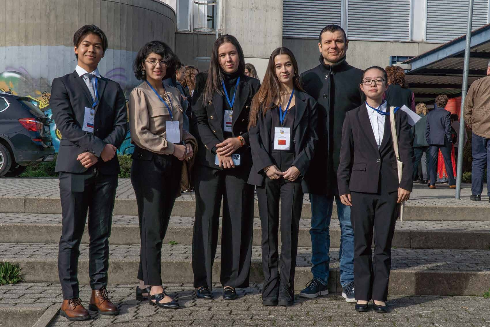

YLMUN
An opportunity for a face-to-face exchange with world leaders.
An opportunity for a face-to-face exchange with world leaders.
YLMUN Global Youth Leadership Model United Nations Summit is a high-end Model UN event themed "Co-shaping a New Order for Future Governance". Rooted in the grand blueprint of the UN Sustainable Development Goals (SDGs), the Summit aims to guide the younger generation to deeply understand the core context of global issues, and cultivate their cross-cultural communication capabilities, multilateral negotiation skills, and systematic critical thinking.
Target Participants: Students currently enrolled in school (Primary School Division, Middle School Division, University Division)
Breaking away from the conventional Model UN meeting format, YLMUN creates a platform for "diplomatic field practice". It has assembled an academic advisory panel consisting of seasoned international affairs experts, including former UN Deputy Secretary-Generals and ex-government officials from multiple countries. With their cumulative experience in over 200 real UN decision-making processes, these experts will personally guide delegates through topic deliberations, negotiation simulations, and resolution drafting.
Through the three-level promotion system established by the Summit, outstanding students will advance step by step from school-level selections to the international stage, and ultimately gather at the global finals in Switzerland. This is not only an academic competition, but also a profound journey of expanding global perspectives and tempering leadership competencies.
Join YLMUN →

YLMUN Global Youth Leadership Model United Nations Summit is a high-end Model UN event themed "Co-shaping a New Order for Future Governance". Rooted in the grand blueprint of the UN Sustainable Development Goals (SDGs), the Summit aims to guide the younger generation to deeply understand the core context of global issues, and cultivate their cross-cultural communication capabilities, multilateral negotiation skills, and systematic critical thinking.

Students currently enrolled in school (Primary School Division, Middle School Division, University Division)
Breaking away from the conventional Model UN meeting format, YLMUN creates a platform for "diplomatic field practice". It has assembled an academic advisory panel consisting of seasoned international affairs experts, including former UN Deputy Secretary-Generals and ex-government officials from multiple countries. With their cumulative experience in over 200 real UN decision-making processes, these experts will personally guide delegates through topic deliberations, negotiation simulations, and resolution drafting.
Through the three-level promotion system established by the Summit, outstanding students will advance step by step from school-level selections to the international stage, and ultimately gather at the global finals in Switzerland. This is not only an academic competition, but also a profound journey of expanding global perspectives and tempering leadership competencies, laying a solid foundation for participants to grow into future talents in international governance.
This program is taught by global leaders and offers students the unique opportunity to gain valuable leadership skills. Upon completion, participants receive certificates and letters of recommendation, enhancing their credentials and future opportunities.
Former Prime Minister of Slovenia & Member of the European Parliament
Former Vice-Prime Minister of Portugal & Director-General of IOM
Former Under-Secretary-General of the United Nations

Former Minister of Foreign Affairs of the Czech Republic
Former Swedish Minister for Employment
Former French Minister of Education
Member of the European Parliament
Former Swiss Ambassador to China
Former Foreign Minister of Malta
Former European Commissioner for Environment
Former Member of the European Parliament
Member of the House of Lords
Former EU Commissioner for Employment
Director of the International Centre for UNWTO Academy
Sustainable Travel Advocate & Former CEO of PATA
The YLMUN Leadership Mentor Panel will go beyond the conventional role of "guest speakers" and engage deeply throughout the entire conference.
Outstanding delegates will have the opportunity to obtain recommendation letters signed by distinguished mentors and gain visibility in the talent recommendation pool.
The three-level promotion system created by the Summit ensures that every promising young person advances step by step to the global stage in Switzerland.
$10 registration fee
+ Online learning via the official website
+ Pass the course assessment
Onsite training and competitions in capitals
• Training Day
• Competition Day
• Closing Ceremony Day
Renowned VIP guest instructors
+ UN headquarters visit
+ Study tour in Switzerland / Europe
+ Certificate & Recommendation letter awarding

YLMUN Global Youth Leadership Model United Nations Summit is a high-end Model UN event themed "Co-shaping a New Order for Future Governance". Rooted in the grand blueprint of the UN Sustainable Development Goals (SDGs), the Summit aims to guide the younger generation to deeply understand the core context of global issues.
It cultivates cross-cultural communication capabilities, multilateral negotiation skills, and systematic critical thinking. Through the three-level promotion system, outstanding students advance step by step to the global finals in Switzerland.
Explore the YLMUN Summit →| Key Session | YLMUN | HMUN | YMUN | Domestic Model UN Conferences in China |
|---|---|---|---|---|
| Guidance from UN Officials | ✔ | ✖ | ✖ | ✖ |
| UN Internship Opportunities | ✔ | ✖ | ✖ | ✖ |
| Diplomat’s Night | ✔ | ✖ | ✖ | ✖ |
| Global Advancement System | ✔ | ✖ | ✖ | ✖ |
| Official Certificate + Recommendation Letter from Officials | ✔ | ✖ | ✖ | ✖ |
| Official Training | ✔ | ✖ | ✖ | ✖ |
| Full English Experience | ✔ | ✔ | ✔ | ✖ |
| Authentic Topics | ✔ | ✔ | ✔ | ✔ |